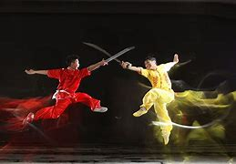
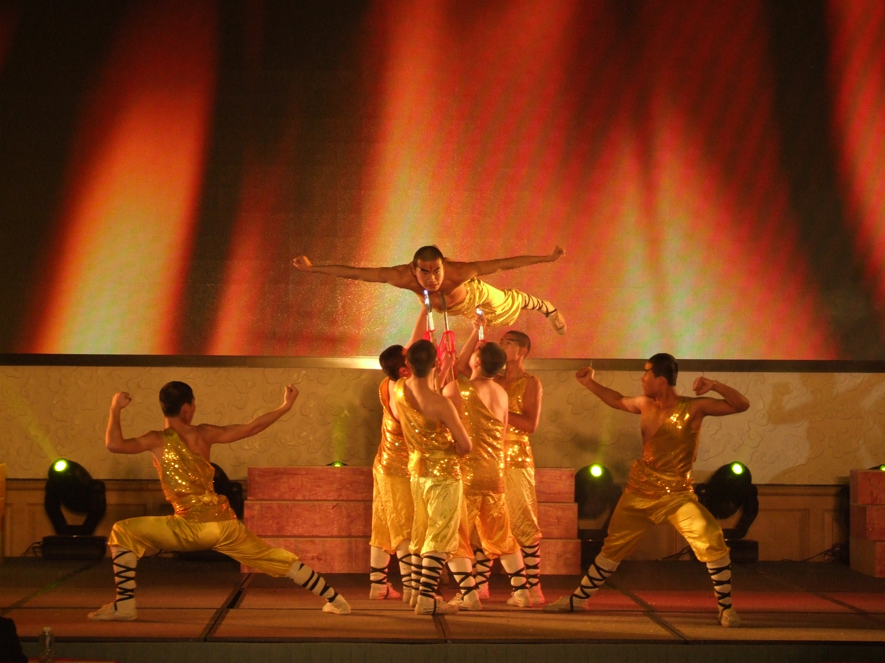
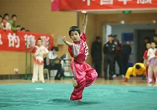

表演来源
表演艺术，在电影未出现之前，主要是以舞台戏剧形式呈现。中国戏剧的前身是中国戏曲，历史上最先使用“戏曲”这个名词的是宋刘埙（1240-1319）继而便到了元（1271年—1368年）人陶宗仪《南村辍耕录》、和明人魏良辅《南词引正》。 因为戏曲、戏剧在民间中广泛传播，而真正的武术一直之属于皇室贵胄秘而不传之技，所以民间难得以窥真武（全貌）；及至后来电影艺术对“中国武术”、“中国功夫”的广泛传扬，让套路、表演类的“武术”在一般人当中产生了先入为主的印象，导致现代人对中国武术的概念被表演化、套路化。 但在民间，一直有修习中国传统武术的群体，仍然秉持其不献演、不竞技的传统操守，内敛恭肃，在民间广泛传扬。
  